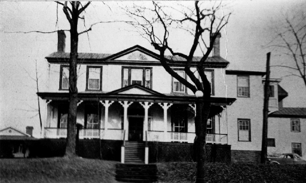

19 S. Market St.
Staunton, Virginia

-
Constructed: Early nineteenth century.
-
Original Use: Residence.
-
Ownership History: Before 1808, the property of John Coalter,
who sold it to Carter Beverly. Beverly sold the house to Erasmus
Stribling in 1811. In 1826, Daniel Sheffey purchased the house.
Following Steffey's death, his widow made the house, known as
"Kalorama," into a girl's school which eventually became the
Virginia Female Institute and relocated to Stuart Hall.
-
Number of Stories:
-
Architectural Style:
-
Exterior Features:
-
Interior Features: